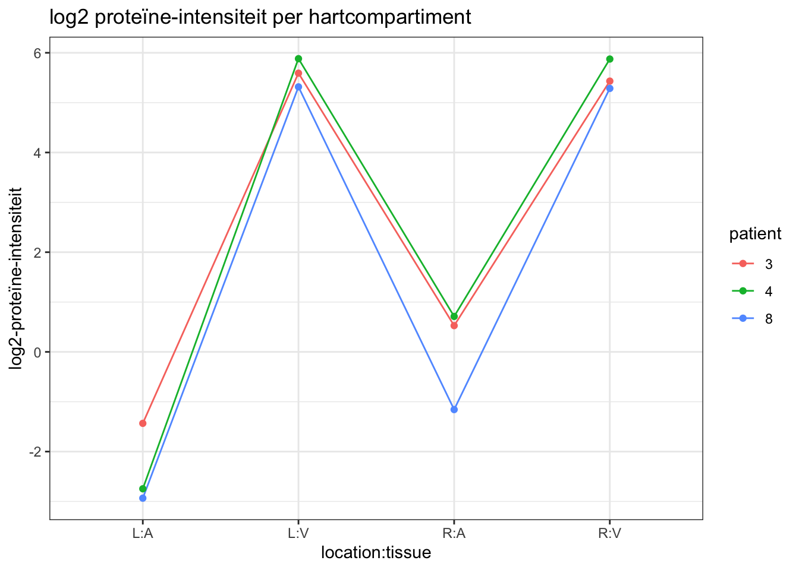
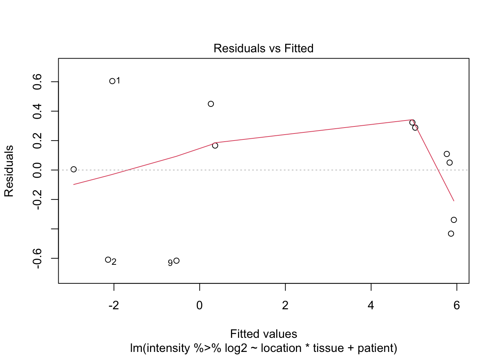
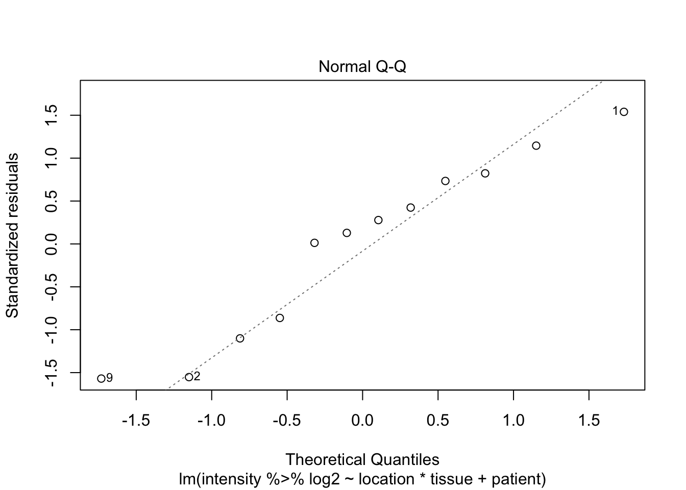
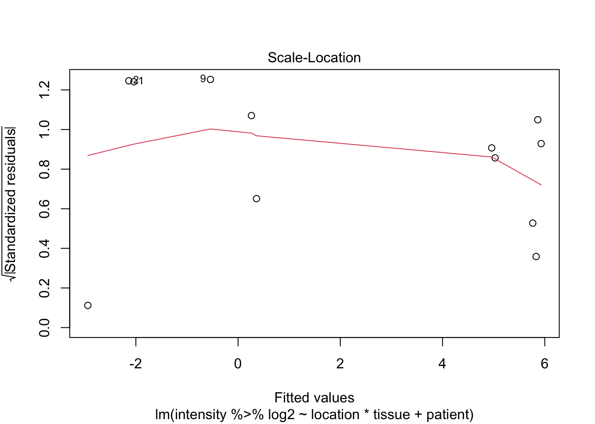
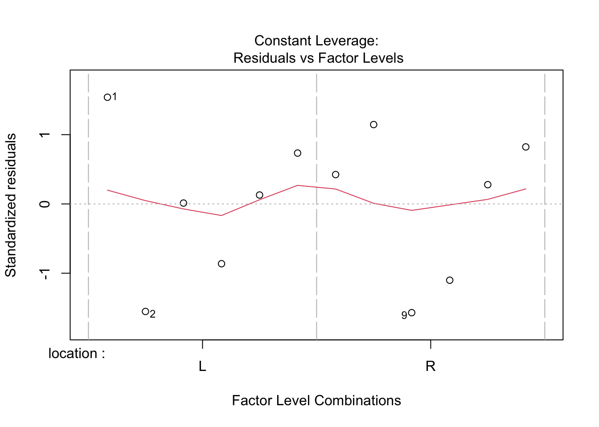
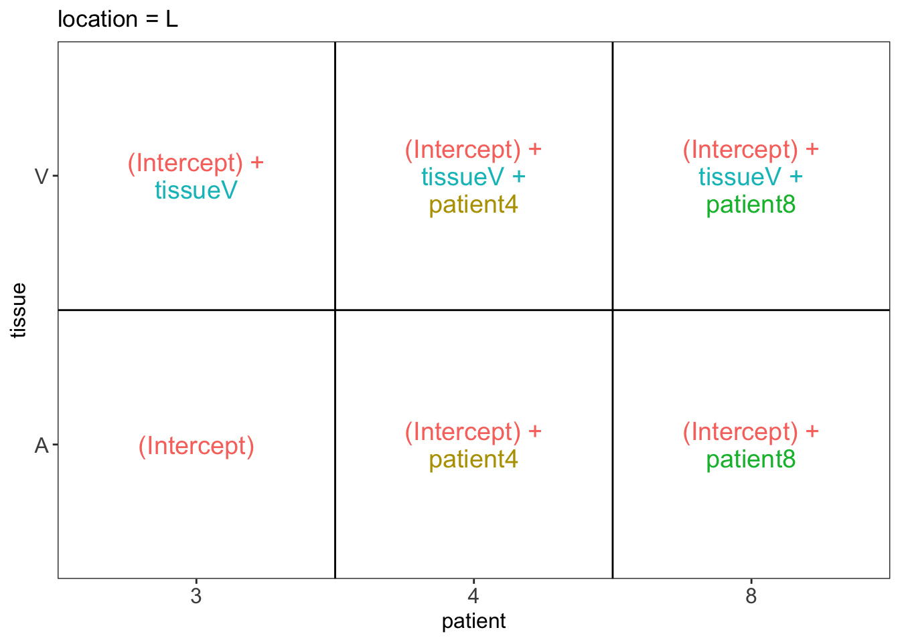
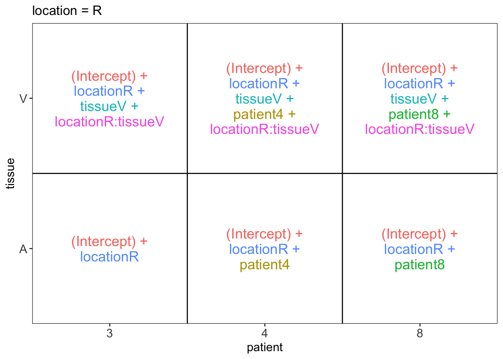

Examen voorbeeldoefening 2
Alexandre Segers & Lieven Clement
statOmics, Ghent University (https://statomics.github.io)

Onderzoekers hebben het proteoom van weefselbiopsieën van verschillende regio’s in het hart in kaart gebracht voor 3 patienten (patient 3, 4 en 8 genummerd). Ze hebben het proteoom gemeten in het linker atrium (LA), rechter atrium (RA), linker ventrikel (LV) en rechter ventrikel (RV) met massa-spectrometrie.
De intensiteiten zijn een goeie proxy voor de proteineconcentratie. Het is de conventie in massaspectrometrie gebasseerde proteomics om de intensiteiten op log-schaal te modelleren zodat de verschillen op log-schaal een interpretatie krijgen als log2-fold changes. De intensiteitsdata zijn reeds log2 getransformeerd.
In dit examen zijn we vooral geïnteresseerd in het proteïne Myosin light chain 3 (verder MyosinL3 genoemd) en wensen we volgende onderzoeksvragen te beantwoorden:
- Is er een verschil in de regulatie van MyosinL3 tussen het ventrikel en het atrium in de linkerzijde van het hart.
- Is er een verschil in de regulatie van MyosinL3 tussen het ventrikel en het atrium in de rechterzijde van het hart.
- Is de fold change van MyosinL3 tussen ventrikel en atrium verschillend tussen linker- en rechterzijde van het hart
1 Data exploratie
## ── Attaching packages ─────────────────────────────────────── tidyverse 1.3.1 ──## ✔ ggplot2 3.3.5 ✔ purrr 0.3.4
## ✔ tibble 3.1.4 ✔ dplyr 1.0.7
## ✔ tidyr 1.1.3 ✔ stringr 1.4.0
## ✔ readr 1.4.0 ✔ forcats 0.5.1## ── Conflicts ────────────────────────────────────────── tidyverse_conflicts() ──
## ✖ dplyr::filter() masks stats::filter()
## ✖ dplyr::lag() masks stats::lag()Merk op dat de intensiteiten nog niet log2 getranformeerd zijn!!!
hart <- read.csv(file = "https://raw.githubusercontent.com/statOmics/biostatistics21/master/hearthproteine.csv")
hartWe zien dat de data in “character” format staat voor location en tissue, en integer voor patient. We veranderen deze allemaal naar factor.
hart$location <- as.factor(hart$location)
hart$tissue <- as.factor(hart$tissue)
hart$patient <- as.factor(hart$patient)Aangezien we de data per patient opnemen kunnen we verwachten dat de proteïneintensiteit per patient gecorreleerd is. Daarom bekijken we de data per patient, en vormen zo dus een geblocked design per patient.
hart %>%
ggplot(aes(x=location:tissue, y=intensity %>% log2)) +
theme_bw() +
geom_line(aes(group=patient, color=patient)) +
geom_point(aes(color=patient))+
ggtitle("log2 proteïne-intensiteit per hartcompartiment") +
ylab("log2-proteïne-intensiteit") 
Zoals we vermoedden is de log2-proteïneintensiteit meer gelijkend per patient. Zo kan je bijvoorbeeld zien dat patient 8 op elk van de 4 verschillende metingen de laagste log2-proteïneintensiteit heeft. We zien ook dat er een groot verschil lijkt te zijn tussen het atrium en ventrikel, op zowel de linker als rechterkant van het hart. Het lijkt ook dat er een minder groot verschil is tussen het ventrikel en atrium aan de rechterkant van het hart tegenover de linkerkant.
Het is ook duidelijk dat er weinig data zijn om de aannames van het model goed te kunnen evalueren. Dat is jammergenoeg dikwijls het geval wanneer dure high-throughput technologiën worden gebruikt.
2 Algemeen lineair model opstellen
We modelleren de log2-proteïneintensiteit in functie van de locatie, het weefsel, de locatie \(\times\) weefsel-interactie en een blokfactor voor patient.
Merk op dat we geen interacties toevoegen voor patient. Dat is immers ook niet zinvol hier omdat we anders de resultaten niet kunnen veralgemenen naar de populatie toe. Bovendien laat de studie ook niet toe om dit te schatten, we hebben immers maar 1 meting per hartkamer per patient.
##
## Call:
## lm(formula = intensity %>% log2 ~ location * tissue + patient,
## data = hart)
##
## Residuals:
## Min 1Q Median 3Q Max
## -0.61598 -0.36199 0.07983 0.29682 0.60435
##
## Coefficients:
## Estimate Std. Error t value Pr(>|t|)
## (Intercept) -2.03790 0.39252 -5.192 0.00203 **
## locationR 2.39826 0.45324 5.291 0.00185 **
## tissueV 7.96795 0.45324 17.580 2.17e-06 ***
## patient4 -0.09867 0.39252 -0.251 0.80991
## patient8 -0.90152 0.39252 -2.297 0.06137 .
## locationR:tissueV -2.46411 0.64098 -3.844 0.00852 **
## ---
## Signif. codes: 0 '***' 0.001 '**' 0.01 '*' 0.05 '.' 0.1 ' ' 1
##
## Residual standard error: 0.5551 on 6 degrees of freedom
## Multiple R-squared: 0.9876, Adjusted R-squared: 0.9772
## F-statistic: 95.22 on 5 and 6 DF, p-value: 1.247e-05
Er zijn onvoldoende data om de aannames na te gaan. We zien wel geen grote afwijkingen in de QQ-plot en de variantie lijkt min of meer constant en veronderstellen dat aan de aannames van het model is voldaan.
3 Hypotheses testen
We wensen drie onderzoeksvragen te evalueren en vertalen die als volgt naar de parameters van het model. Aangezien we een factorieel design hebben kunnen we de gemiddelde log2-proteïneintensiteit weergeven per groep:
library(ExploreModelMatrix)
ExploreModelMatrix::VisualizeDesign(hart, ~ location*tissue + patient)$plotlist## $`location = L`
##
## $`location = R`
- Is er een verschil in de regulatie van MyosinL3 tussen het ventrikel en het atrium in de linkerzijde van het hart.
\[ H_0: \beta_V = 0 \leftrightarrow H_1: \beta_V \neq 0 \]
- Is er een verschil in de regulatie van MyosinL3 tussen het ventrikel en het atrium in de rechterzijde van het hart.
\[ H_0: \beta_V + \beta_{V:R}= 0 \leftrightarrow H_1: \beta_V + \beta_{V:R} \neq 0 \]
- Is de fold change van MyosinL3 tussen ventrikel en atrium verschillend tussen linker- en rechterzijde van het hart \[ H_0: \beta_{V:R}= 0 \leftrightarrow H_1: \beta_{V:R} \neq 0 \]
Eerst zullen we een omnibustest uitvoeren om te testen voor alle hypothesen simultaan. Dat vertaalt zich in de volgende omnibus null hypothese: \[ H_0: \beta_V = \beta_V+\beta_{V:R} = \beta_{V:R} = 0 \rightarrow \beta_V = \beta_{V:R} = 0\] Wat leidt tot het testen van
\[ H_0: \beta_V = \beta_{V:R} = 0 \leftrightarrow H_1: \beta_V \neq 0 \text{ en, of } \beta_{V:R} \neq 0 \] De omnibushypothese kunnen we evalueren met een F-test tussen het volledig model en met het model dat enkel de blokfactor patient en het locatie-effect bevat.
We zien dat er een extreem significant verschil is in de regulatie van MyosinL3 tussen het ventrikel en atrium in het hart, ofwel links en/of rechts en/of dat er een interactie is.
We evalueren nu elke hypothese in een posthoc analyse:
## Loading required package: mvtnorm## Loading required package: survival## Loading required package: TH.data## Loading required package: MASS##
## Attaching package: 'MASS'## The following object is masked from 'package:dplyr':
##
## select##
## Attaching package: 'TH.data'## The following object is masked from 'package:MASS':
##
## geysermcp <- glht(lm1,linfct = c("tissueV = 0",
"tissueV + locationR:tissueV = 0",
"locationR:tissueV = 0"
))
summary(mcp)##
## Simultaneous Tests for General Linear Hypotheses
##
## Fit: lm(formula = intensity %>% log2 ~ location * tissue + patient,
## data = hart)
##
## Linear Hypotheses:
## Estimate Std. Error t value Pr(>|t|)
## tissueV == 0 7.9680 0.4532 17.580 <0.001 ***
## tissueV + locationR:tissueV == 0 5.5038 0.4532 12.143 <0.001 ***
## locationR:tissueV == 0 -2.4641 0.6410 -3.844 0.019 *
## ---
## Signif. codes: 0 '***' 0.001 '**' 0.01 '*' 0.05 '.' 0.1 ' ' 1
## (Adjusted p values reported -- single-step method)##
## Simultaneous Confidence Intervals
##
## Fit: lm(formula = intensity %>% log2 ~ location * tissue + patient,
## data = hart)
##
## Quantile = 3.0272
## 95% family-wise confidence level
##
##
## Linear Hypotheses:
## Estimate lwr upr
## tissueV == 0 7.9680 6.5959 9.3400
## tissueV + locationR:tissueV == 0 5.5038 4.1318 6.8759
## locationR:tissueV == 0 -2.4641 -4.4045 -0.5237## Estimate lwr upr
## tissueV 250.3757829 96.80100852 647.5968964
## tissueV + locationR:tissueV 45.3753769 17.54315930 117.3634003
## locationR:tissueV 0.1812291 0.04726769 0.6948506
## attr(,"conf.level")
## [1] 0.95
## attr(,"calpha")
## [1] 3.024864 Conclusie:
Er is een extreem significant verschil in de regulatie van het Myosin3L proteine tussen het ventrikel en atrium in het hart (p << 0.001).
Het geometrisch gemiddelde van de expressie van Myosin3L is een factor 250 hoger in het linkerventrikel dan in het linkeratrium (p < 0.001, 95% BI [96.8, 647.9]).
Het geometrisch gemiddelde van de expressie van Myosin3L is een factor 45 hoger in het rechterventrikel dan in het rechteratrium (p < 0.001, 95% BI [17.6, 117.2]).
De opregulatie van Myosin3L in ventrikel vs het atrium is gemiddeld een factor 6 hoger in de linker- dan in de rechterzijde (p = 0.019, 95% BI [1.4, 21.2] ).